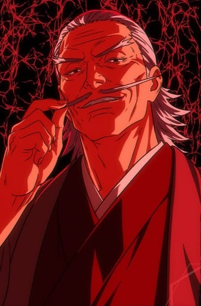
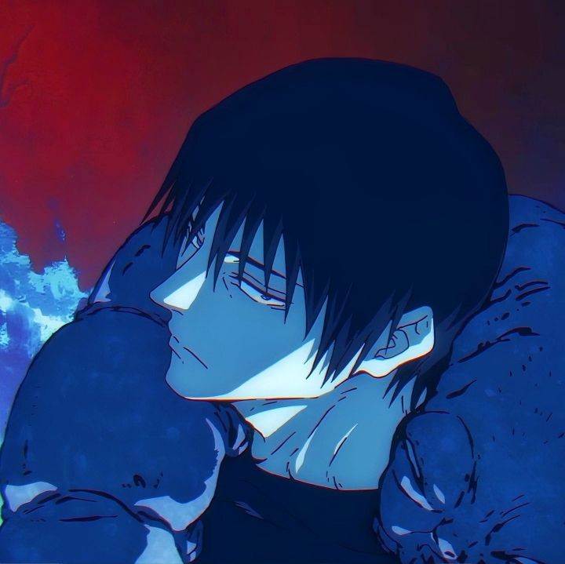
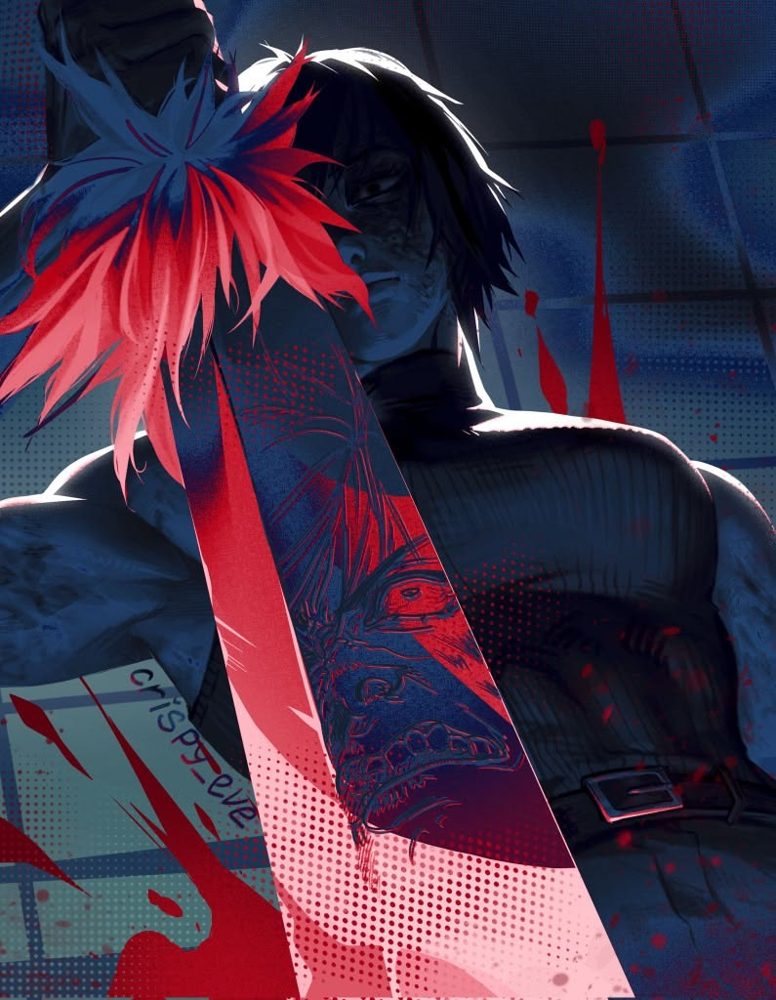
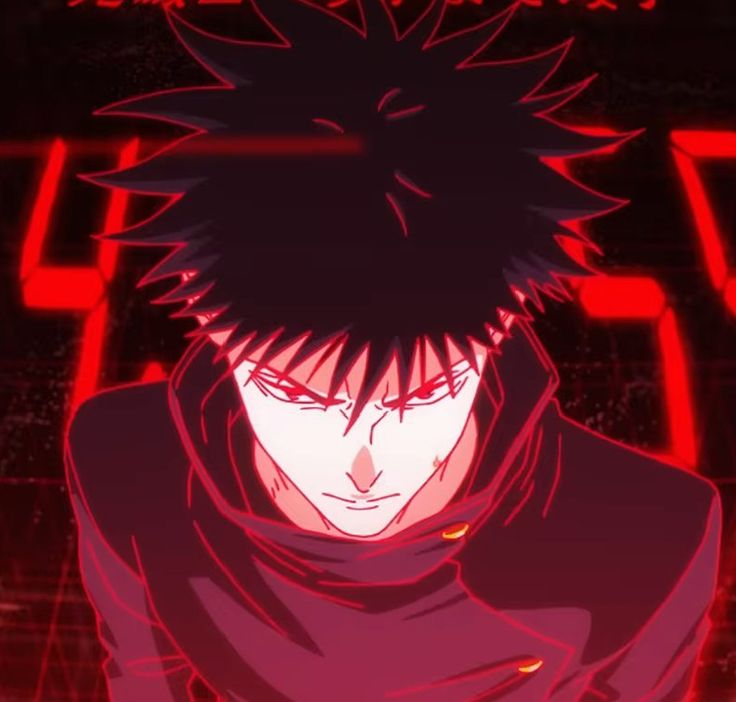
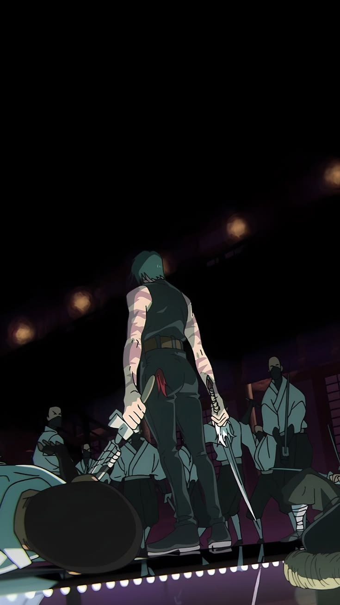

Técnica de las Diez Sombras
La técnica más codiciada del clan. Permite invocar y manipular hasta 10 shikigamis utilizando las sombras como intermediario.
Usuario: Megumi FushiguroElitismo, Tradición y Poder Heredado — 禪院家




El Clan Zenin (禪院家) es una de las Tres Grandes Familias de Hechiceros en el mundo del jujutsu, junto con los clanes Gojo y Kamo. Reconocido por su inmenso poder político, es históricamente célebre por su cultura interna elitista, basada estrictamente en la posesión de técnicas heredadas y el poder absoluto.
Creen que el valor de un hechicero depende de su fuerza de combate. Quien no aporta poder militar es considerado prescindible.
Las técnicas heredadas de nacimiento definen el estatus. Nacer sin energía maldita o sin una técnica del clan condena al repudio interno.
Mantienen su propia fuerza militar para ejecutar misiones de alto nivel, proteger la mansión y erradicar cualquier amenaza o traición.

La técnica más codiciada del clan. Permite invocar y manipular hasta 10 shikigamis utilizando las sombras como intermediario.
Usuario: Megumi FushiguroDivide cada segundo en 24 cuadros de movimiento para lograr velocidades extremas y fijar trayectorias de ataque predeterminadas.
Usuarios: Naobito y Naoya Zenin
27° Líder del Clan Zenin
Heredero directo de la Técnica de las Diez Sombras. Aunque nunca fue criado dentro de la mansión, fue nombrado líder por testamento tras la muerte de Naobito.